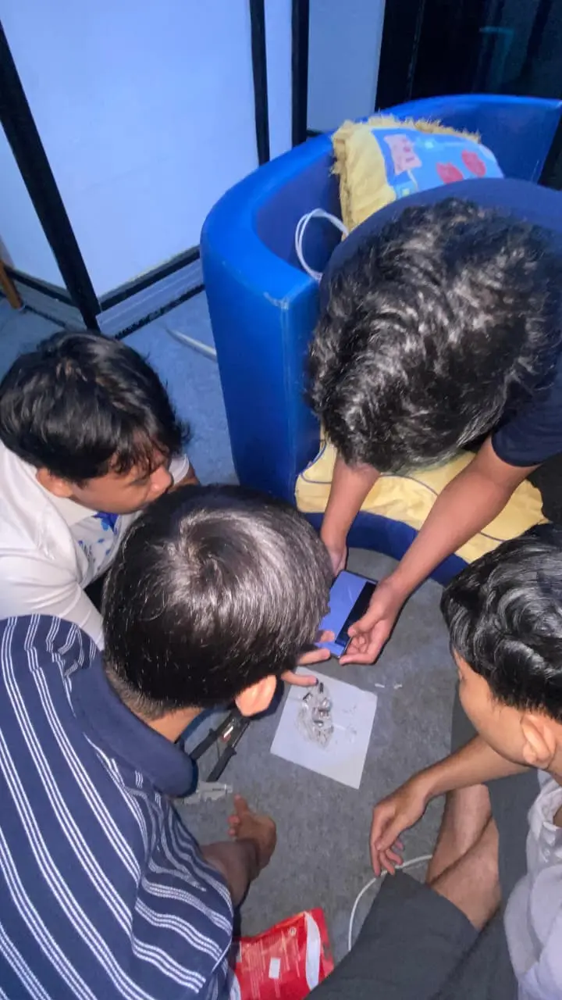
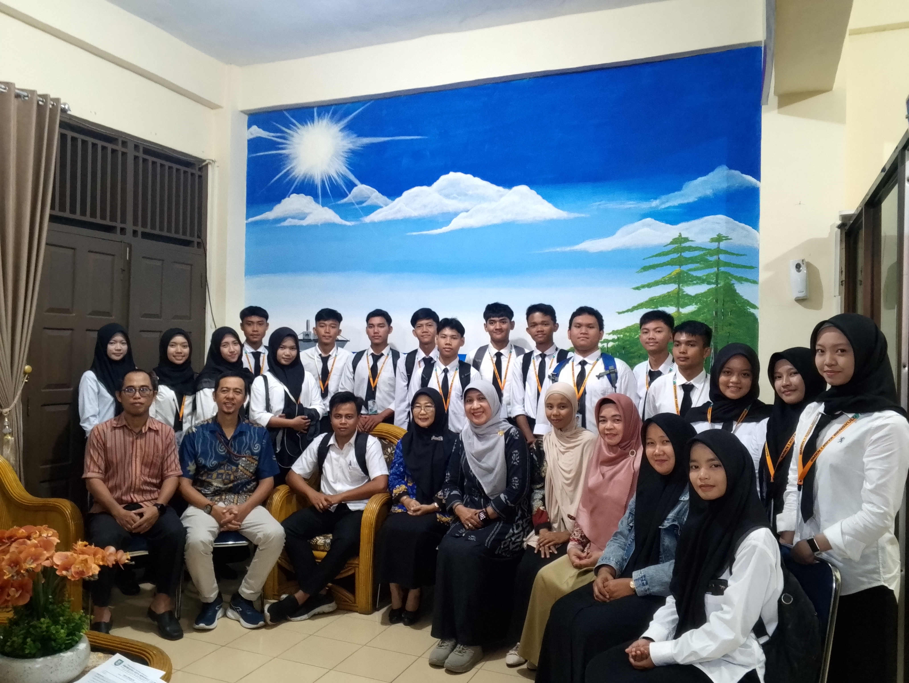
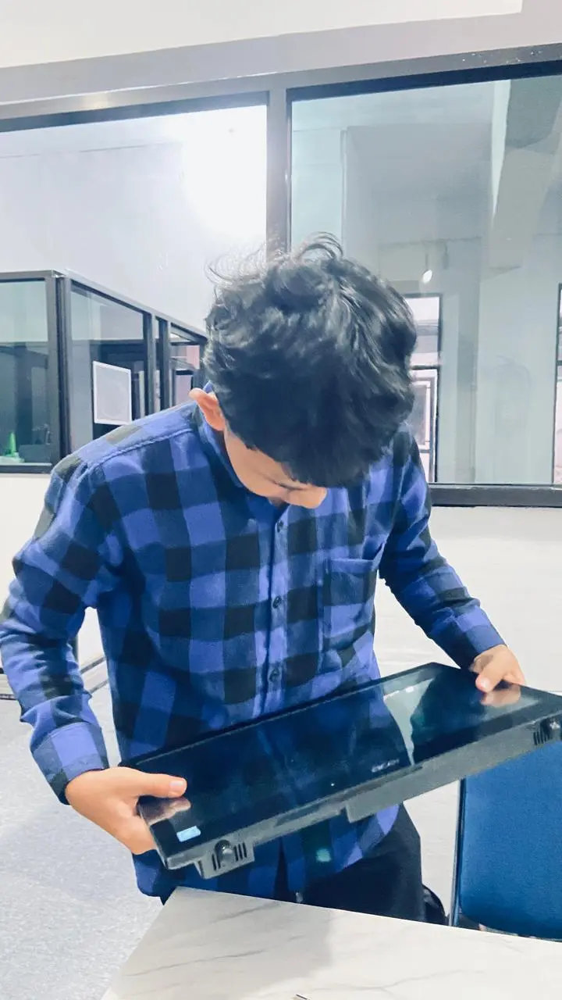
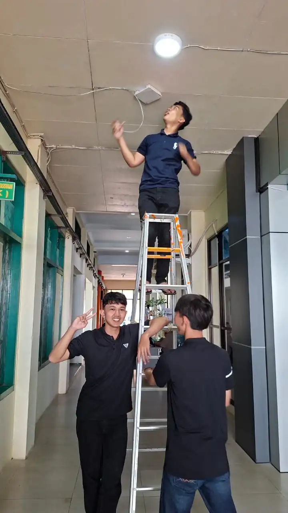
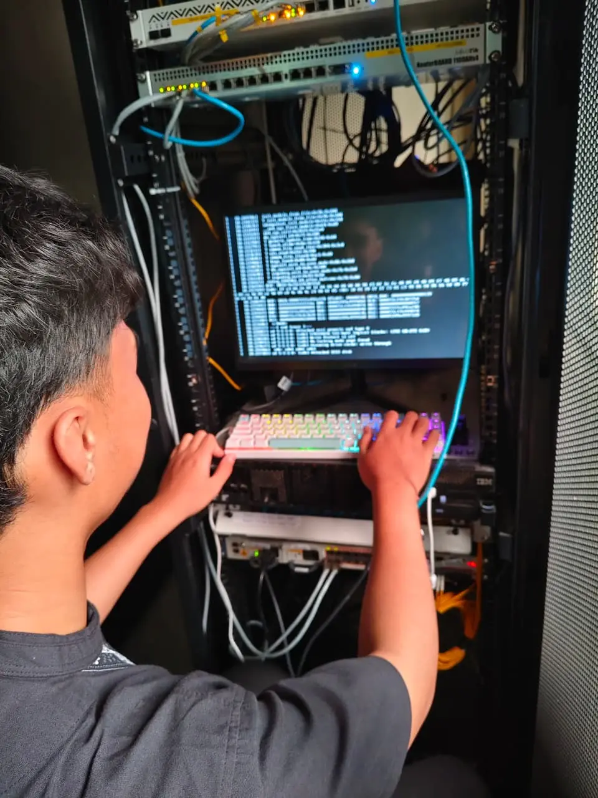
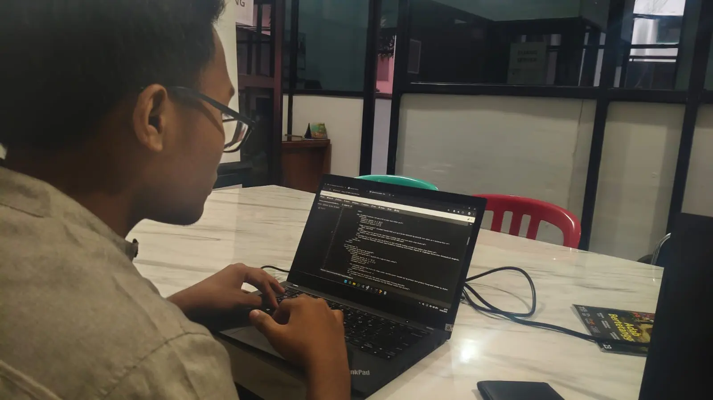

01 / NETWORKInfrastruktur & Jaringan
Pengelolaan dan optimasi jaringan kampus untuk konektivitas internet yang stabil, cepat, dan aman.
↗Unit Pelaksana Teknis Teknologi Informasi dan Komunikasi yang mendukung pengelolaan sistem informasi, infrastruktur jaringan, serta layanan teknologi di lingkungan Universitas Muhammadiyah Bengkulu.

UPTTIK adalah unit kerja yang bertugas memberikan layanan dan pengelolaan di bidang teknologi informasi, komunikasi, dan telekomunikasi pada suatu instansi, seperti sekolah, kampus, atau lembaga pemerintahan.
UPTTIK adalah unit kerja yang bertugas memberikan layanan dan pengelolaan di bidang teknologi informasi, komunikasi, dan telekomunikasi di lingkungan Universitas Muhammadiyah Bengkulu.
Selengkapnya ↗Menyediakan solusi teknologi yang andal dan inovatif untuk memajukan sistem digital di lingkungan kampus.

01 / NETWORKPengelolaan dan optimasi jaringan kampus untuk konektivitas internet yang stabil, cepat, dan aman.
↗
02 / MAINTENANCEPemeliharaan dan perbaikan perangkat keras maupun perangkat lunak untuk menunjang aktivitas akademik.
↗
03 / IT SUPPORTLayanan bantuan teknis dan penanganan kendala sistem IT secara responsif bagi seluruh civitas akademika.
↗
04 / DATA CENTERPengaturan, pemantauan, dan pengamanan server serta pusat data untuk menjamin kelancaran sistem kampus.
↗
05 / DEVELOPMENTPembuatan dan integrasi aplikasi web serta portal sistem informasi akademik sesuai kebutuhan unit kerja UMB.
↗Tim kami siap membantu kebutuhan teknologi dan kendala IT di lingkungan kampus.
Hubungi tim kami ↗Temukan jawaban cepat untuk pertanyaan umum mengenai layanan dan dukungan teknologi kami.
Masih punya pertanyaan? ↗UPTTIK (Unit Pelaksana Teknis Teknologi Informasi dan Komunikasi) adalah unit kerja di Universitas Muhammadiyah Bengkulu yang bertanggung jawab atas pengelolaan infrastruktur IT, sistem informasi, dan layanan teknologi di lingkungan kampus.
Kami menyediakan pengelolaan jaringan internet kampus, pengembangan website dan sistem informasi akademik, pemeliharaan perangkat keras, serta dukungan teknis (IT Support) bagi civitas akademika.
Hubungi tim kami melalui WhatsApp pada tombol kontak atau kunjungi kantor UPTTIK UMB pada jam kerja.
Ya. Mahasiswa, dosen, dan staf dapat memperoleh layanan serta dukungan teknologi untuk kepentingan akademik dan administratif.
Kantor UPTTIK berada di Jl. Bali, Komplek Universitas Muhammadiyah Gedung D, Kampung Bali, Bengkulu. Jam layanan Senin–Sabtu, pukul 08.00–14.00 WIB.
Tim support IT UPTTIK aktif dan siap membantu kendala teknis Anda. Hubungi kami melalui WhatsApp atau kunjungi kantor kami.
Chat WhatsApp Sekarang ↗